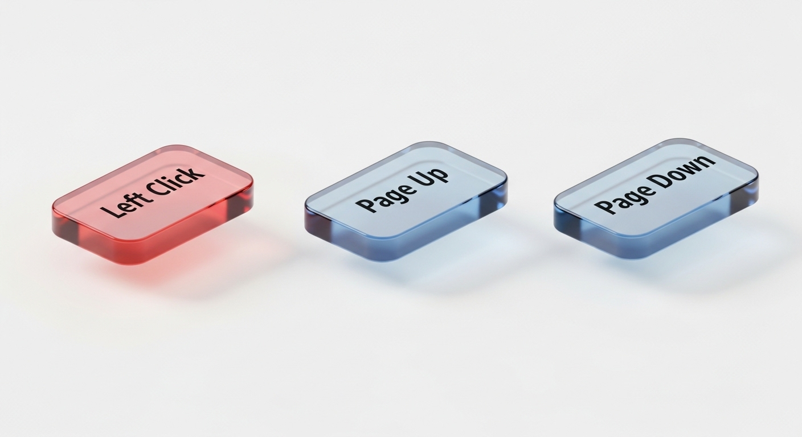

토비 포토카드 Premium
어머니를 위해 만든, 세상에서 가장 따뜻한 소통 도구
👨👩👧👦 개발 동기
예기치 못한 시련을 마주한 저희 어머니를 위해 이 프로젝트는 시작되었습니다. 말이 서툴러지고 손발이 무거워지는 과정에서, 가족과 소통하고 싶어 하시는 그 간절함을 기술로 채워드리고 싶었습니다.
동일한 아픔을 겪는 모든 환우분과 가족분들이 조금 더 편안하게 진심을 나눌 수 있기를 소망합니다.

✨ 핵심 기능
OptiKey 맞춤형 설계
시선 추적기와의 완벽한 조화. XML 커스터마이징을 통해 환우 개개인에게 딱 맞는 환경을 제공합니다.

최소한의 조작, 최대의 효율
클릭과 스크롤, 단 3개의 핵심 버튼으로 피로도를 획기적으로 낮추었습니다.
💻 직관적인 XML 구조
<Keyboard>
<Label>Left Click</Label>
<Label>Page Up</Label>
<Label>Page Down</Label>
</Keyboard>
<Label>Left Click</Label>
<Label>Page Up</Label>
<Label>Page Down</Label>
</Keyboard>
📷 사용 시나리오
눈동자의 움직임만으로 필요한 카드를 선택하고, 음성으로 마음을 전합니다.